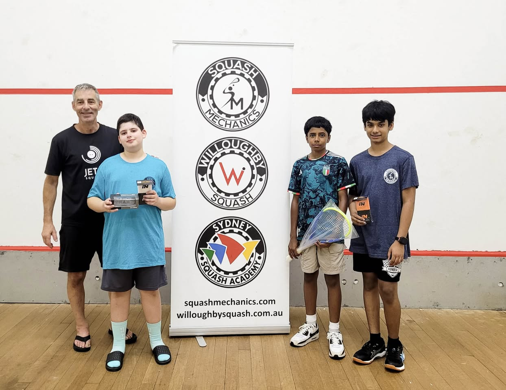

About JETS Squash
Junior Emerging Talent in Sydney
OUR STORY
How It All Started
Geoff, a former high-performance squash coach, saw Australia's grassroots participation crisis first-hand. Rather than staying in the elite pathway, he made a deliberate switch to community-level coaching — where the real impact happens.
Together with Yan, they founded JETS with a clear mission: catch kids early, before high school, before they commit to other sports, and give them a fun, pressure-free introduction to squash.
Operating out of MAASH Sports & Fitness in Marsfield with its seven squash courts, JETS has grown into a thriving club with packed courts and programs for beginners, social players, competitive juniors, and adults alike.

What We Believe
Fun First
We believe the best way to grow the game is to make it fun. Play-based activities, games, and minimal focus on technique for beginners. The skills come naturally when kids are having a great time.
Everyone Welcome
All ages, all skill levels, all backgrounds. Whether you're picking up a racquet for the first time or training for state selection, there's a place for you at JETS.
Grow the Game
Squash in Australia needs more players at every level. JETS is doing its part by building a pipeline from first-time beginners to competitive juniors, right here in Sydney.

RECOGNITION
Making an Impact
JETS Squash has been recognised as a model grassroots club — proof that community-level programs can thrive in Australian squash. Founder Geoff Davenport received the Distinguished Services Award from Squash Australia for his outstanding contribution to growing junior participation in Sydney.

Where We Play
MAASH Sports & Fitness is our home — a public multi-sports centre with seven dedicated squash courts in Marsfield, Sydney.
1 Trafalgar Pl, Marsfield NSW 2122
Visit MAASH